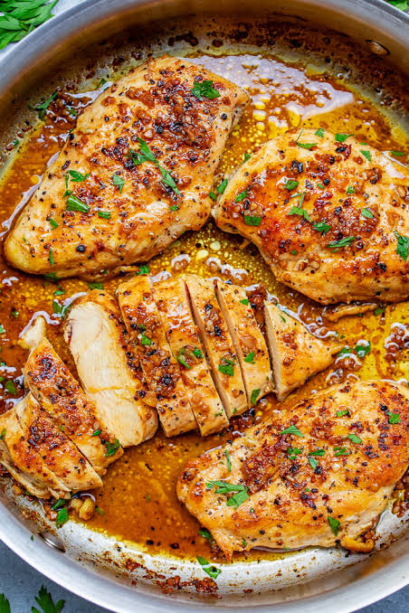

Garlic Chicken recipe
Home

Description
Garlic Butter Pan-Seared Chicken Breasts feature tender,
juicy chicken cooked in a skillet to achieve a golden crust,
then basted in a rich, savory garlic butter sauce and garnished with fresh parsley.
It is a quick, high-protein meal that pairs easily with roasted vegetables,
rice, or pasta.
ingredient
- Boneless, skinless chicken breasts
- Butter
- Olive oil (for searing)
- Minced garlic
- Fresh parsley (chopped, for garnish)
- Salt and black pepper
- Paprika or preferred poultry seasoning (for the golden crust)
Steps
- season: Coat chicken with salt, pepper, and paprika.
- sear: Cook in olive oil over medium-high heat for 5–6 minutes per side.
- baste: Add butter and minced garlic to the pan;
spoon melted butter over chicken for 1–2 minutes.
- serve: Top with fresh parsley, rest 5 minutes, and slice.